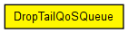
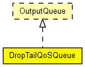

Drop-tail queue with QoS support, to be used in network interfaces. Performs priority queueing. Conforms to the OutputQueue interface.
The following diagram shows usage relationships between types. Unresolved types are missing from the diagram. Click here to see the full picture.
The following diagram shows inheritance relationships for this type. Unresolved types are missing from the diagram. Click here to see the full picture.
| Name | Type | Default value | Description |
|---|---|---|---|
| frameCapacity | int | 100 |
per-subqueue capacity |
| classifierClass | string |
class that inherits from IQoSClassifier |
| Name | Value | Description |
|---|---|---|
| display | i=block/queue |
| Name | Direction | Size | Description |
|---|---|---|---|
| in | input | ||
| out | output |
// // Drop-tail queue with QoS support, to be used in network interfaces. // Performs priority queueing. // Conforms to the OutputQueue interface. // simple DropTailQoSQueue like OutputQueue { parameters: int frameCapacity = default(100); // per-subqueue capacity string classifierClass; // class that inherits from IQoSClassifier @display("i=block/queue"); gates: input in; output out; }